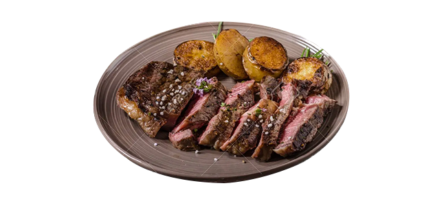
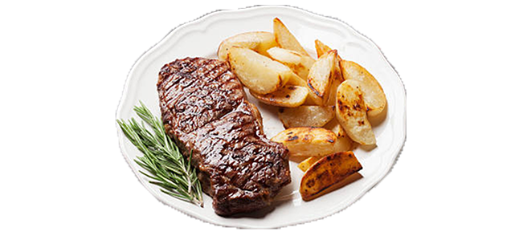
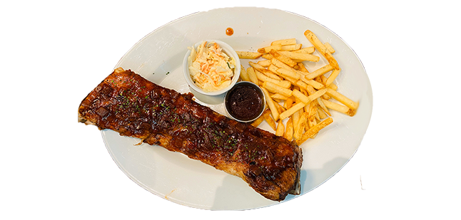
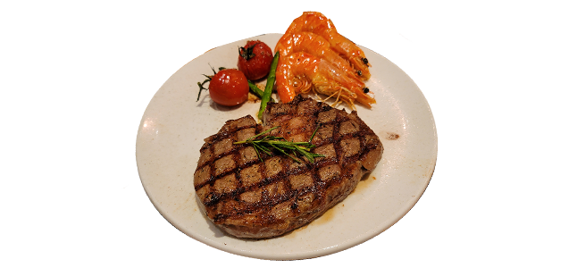
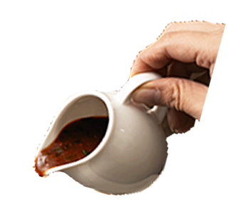

오늘의 추천메뉴
-

시그니처 스테이크
[쇠고기(채끝 200g):호주산]
49,000원
티지아이 프라이데이스 시그니처 소스를 발라 풍미를 더한 채끝 스테이크와 바삭하게 튀겨낸 케이준 포테이토를 함께 즐기는 스테이크 콤보
-

서로인 스테이크
Sirloin Steak
[쇠고기(설도 200g):호주산]
33,000원
쫄깃한 식감과 담백한 육즙을 티지아이 프라이데이스만의 시즈닝으로 맛을 더한 서로인 스테이크
-

립 아이 스테이크
Rib Eye Steak
[쇠고기(등심 200g):호주산]
41,900원
티지아이 프라이데이스만의 시즈닝으로 맛을 더한 육즙 가득한 프리미엄 등심스테이크
-

휠렛 미뇽
Filet Mignon
[쇠고기(안심 150g):호주산]
47,000원
부드럽고 육즙이 풍부한 최고급 안심 스테이크
프라이데이스만의
소스
를 선택하세요!-
글레이즈드 소스
위스키로 만들어진 달콤한 프라이데이스 대표 소스

-
보르도 소스
보르도와 월계수 잎을 넣고 레드와인에 졸인 소스

-
데미글라스 소스
기본 브라운 소스를 졸여 만든 정통 스테이크 소스
